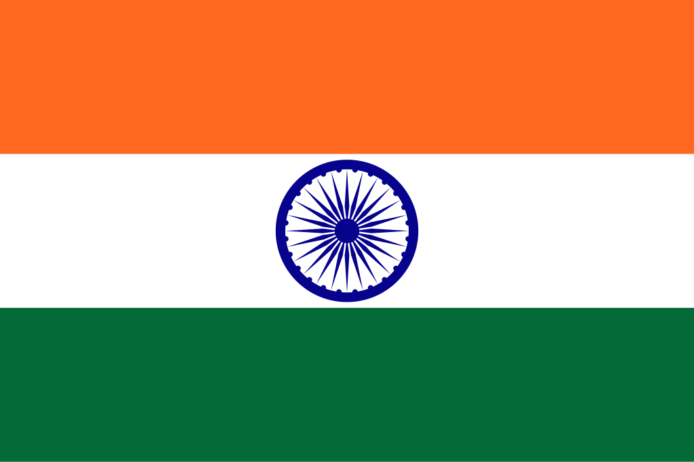

Índia
 A Índia, oficialmente República da Índia, é o segundo país mais populoso do mundo, com mais de 1,4 bilhão de habitantes, e o sétimo maior em extensão territorial, abrangendo cerca de 3,29 milhões de km² no sul da Ásia. Limita-se a norte com China, Nepal e Butão, a oeste com Paquistão, a leste com Bangladesh e Mianmar, e ao sul é banhada pelo Oceano Índico. Sua capital é Nova Délhi, enquanto Mumbai é o maior centro econômico e financeiro do país. A população indiana é marcada por uma diversidade étnica, cultural e linguística impressionante, composta por numerosos grupos, incluindo indo-arianos, drávidas e diversas minorias étnicas. O país abriga mais de 2.000 etnias e fala centenas de línguas, refletindo uma complexa tapeçaria de tradições e culturas. A Índia é uma potência regional em crescimento econômico e influência geopolítica, com forte presença em tecnologia, indústria, agricultura e cultura global.
História
A história da Índia é longa e multifacetada, marcada por civilizações antigas, impérios poderosos e avanços culturais significativos. As primeiras civilizações, como a do Vale do Indo (c. 3300–1300 a.C.), desenvolveram cidades planejadas, sistemas de escrita e comércio extensivo. Ao longo dos séculos, a Índia foi palco de impérios como os maurya e gupta, que consolidaram administração centralizada, avanços científicos, arquitetura magnífica e florescimento das artes. Durante a Idade Média, a península indiana viu a ascensão de sultanatos islâmicos e do Império Mughal, cujas contribuições culturais e arquitetônicas, incluindo o Taj Mahal, permanecem como símbolos de seu legado.
No século XIX, a Índia passou a ser dominada pelo Império Britânico, que transformou profundamente a economia, a sociedade e a infraestrutura do país, ao mesmo tempo em que enfrentava resistência local. Movimentos nacionalistas ganharam força no início do século XX, liderados por figuras como Mahatma Gandhi e Jawaharlal Nehru, culminando na independência em 1947. A história moderna da Índia é marcada pela consolidação como uma república democrática, pela diversidade religiosa e cultural, e pelo rápido desenvolvimento econômico e tecnológico, tornando-se um ator global relevante no século XXI.
Cultura
A cultura da Índia é extremamente rica e diversa, refletindo sua longa história, pluralidade étnica e religiosa. As religiões majoritárias incluem hinduísmo, islamismo, cristianismo, sikhismo, budismo e jainismo, cada uma influenciando tradições, festivais e práticas sociais. A língua oficial é o hindi, mas a Índia reconhece dezenas de línguas regionais, incluindo bengali, tâmil, telugu e marathi. A literatura indiana abrange desde textos clássicos sânscritos, como os Vedas e o Mahabharata, até romances e poesia moderna. A música e a dança tradicionais, incluindo o bharatanatyam, kathak e música clássica indiana, coexistem com estilos modernos e populares, como Bollywood.
A gastronomia reflete a diversidade regional, com pratos icônicos como curry, biryani, dosa e samosas, incorporando uma variedade de especiarias e técnicas culinárias. Festividades como Diwali, Holi, Eid, Navaratri e Onam são celebradas em todo o país, unindo comunidades e preservando tradições. A arquitetura indiana combina templos antigos, palácios, fortes e monumentos coloniais, enquanto as artes visuais, artesanato em tecidos, joias e esculturas continuam a ser apreciadas globalmente. A cultura indiana é, assim, um mosaico dinâmico, resultado da convivência de diversas tradições, inovações e valores sociais que moldam a identidade do país.


Clima
A Índia apresenta grande diversidade climática devido à sua extensão territorial e relevo variado. O norte apresenta invernos frios e verões quentes com clima continental, incluindo regiões montanhosas como o Himalaia. O sul possui clima tropical e monçônico, com chuvas intensas durante a estação das monções. As regiões desérticas do oeste apresentam clima árido, enquanto o nordeste possui clima subtropical úmido, com alta biodiversidade. Essa diversidade climática influencia a agricultura, os ecossistemas e os padrões de vida das populações, criando contrastes significativos entre regiões urbanas e rurais.
Biodiversidade
A biodiversidade da Índia é vasta e complexa, refletindo a variedade de climas e ecossistemas. O país abriga florestas tropicais, montanhas, desertos, manguezais e planícies férteis, com espécies emblemáticas como o tigre-de-bengala, elefante-asiático, rinoceronte-indiano, leopardos, ursos-lua e aves raras. As áreas costeiras e úmidas, como o delta do Ganges, abrigam uma flora e fauna únicas, enquanto os Himalaias e planaltos do norte sustentam ecossistemas adaptados a altitudes elevadas e baixas temperaturas.
A Índia mantém diversos parques nacionais e reservas, como o Parque Nacional de Ranthambore, o Santuário de Vida Selvagem de Kaziranga e o Parque Nacional de Sundarbans, com foco na preservação de espécies ameaçadas e habitats frágeis. Pressões como desmatamento, poluição e urbanização representam desafios constantes para a conservação ambiental. A biodiversidade indiana é crucial para a sustentabilidade ecológica, pesquisa científica e turismo natural, desempenhando papel essencial na vida social e econômica do país.

Cidades
As cidades indianas refletem a diversidade histórica, cultural e econômica do país. Nova Délhi, a capital, é o centro político e cultural, abrigando instituições governamentais, monumentos históricos e centros de educação. Mumbai, o maior centro financeiro, é conhecida por sua indústria cinematográfica (Bollywood), comércio, infraestrutura moderna e porto estratégico. Outras cidades importantes incluem Bengaluru, Chennai, Kolkata e Hyderabad, cada uma com papel central em tecnologia, comércio, cultura e administração regional.
Essas cidades combinam tradição e modernidade, integrando templos históricos, mercados tradicionais e arranha-céus modernos. Elas são centros de inovação, economia e cultura, essenciais para a influência regional e global da Índia, demonstrando a capacidade do país de unir patrimônio histórico e desenvolvimento contemporâneo em um cenário dinâmico e multifacetado.